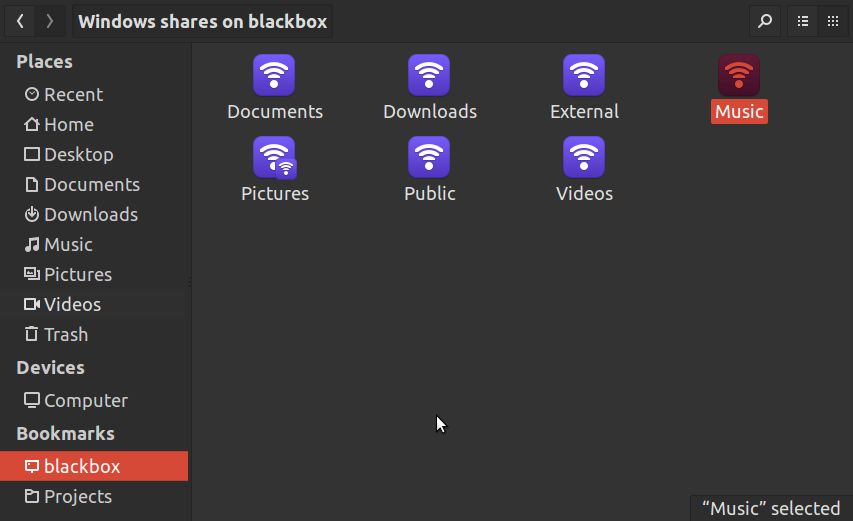
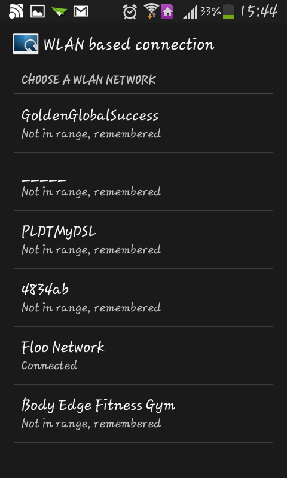

Your Music¶

one of Blox’s main feature is playing, organizing, and sharing music. Once your playlist is et up, Blox can automatically play it. You can also remotely control your music using your phone, laptop or any other computer within your network.
Blox can be integrated to your audio system. Control it using your android phone, or any other computer within your network
Adding Music¶
Blox uses the Music Folder in its File Server to find and play Music
Go to File Server and open Music Folder
Store your music here

Accessing your Music Server¶
In your Blox open the application Cantata. It is already configured to play any Music inside the folder of Blox
Click cantata

Access through Application¶
Music server can be accessed in any Desktops or Laptops that has Cantata application installed.
Download and install Cantata. It is available for any OS.
Install Cantata
Configure Cantata
Name: Put any name here
Host: 192.168.0.24 or blox.local
Port: 6600
Password: blox
Music Folder: Leave it as is
Click Apply and Ok

Access through Smartphone¶
Music server can be remotely controlled using Android Phone. You just need the MPDroid application.
On your smartphone go to Blox home page.
Click on the Music Icon in smartphones
Choose your smartphone from the applications links. If you’re using android phone choose android application.
Open the application and go to settings.

Tap connection settings.

Choose Wlan based connection.

Choose your WIFI
Here are the settings to put:
Host: 192.168.0.24
Password: blox
Leave everything else as is

Press back until Now playing interface.